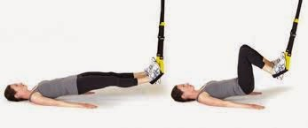

Welcome to Tipos de ejercicios de piernas
9 ejercicios efectivos para glúteos, piernas y abdomen ✅
2021.06.22 15:36
Saltar al contenido Foodspring Magazine Recetas Workouts Artículos Adelgazar Musculación Estilo de vida saludable Body check Calculadora de IMC Calculadora de calorías Calculadora de macronutrientes Shop Shop
Magazine / Musculación / Consejos musculación / 9 Ejercicios efectivos para glúteos, piernas y abdomen
Lee en 8 min9 Ejercicios efectivos para glúteos, piernas y abdomen
Publicado el agosto 11, 2020 (agosto 12, 2020) por Dominic Zimmermann Author Por: Dominic Zimmermann Redactor fitness Dominic es periodista deportivo y entrenador personal, y se encarga de nuestros artículos sobre fitness. Además, produce nuestros planes de entrenamiento gratuitos. Más información Por qué confiar en nosotros 92 shares Share Tweet PinSi quieres tonificar tus glúteos, piernas y abdomen; no basta con que conozcas los ejercicios adecuados . Tendrás que combinarlos además en un plan de entrenamiento eficaz . Por eso hemos puesto a tu disposición 2 planes de entrenamiento gratuitos para glúteos, piernas y abdomen en los que te aclaramos qué debes tener en cuenta para obtener resultados rápidos. El primer plan de entrenamiento puede ser llevado a cabo sin aparatos ni pesos en casa o donde más te convenga. El segundo plan ha sido concebido para que puedas reproducirlo en tu próxima vista al gimnasio .
Tabla de contenido
¿Cuáles son los ejercicios más convenientes para glúteos, piernas y abdomen? ¿Cuán efectivo es el entrenamiento de glúteos, abdomen y piernas? 9 Ejercicios para glúteos, piernas y abdomen Plan de entrenamiento de abdomen, glúteos y piernas para hacer en casa sin pesos Plan de entrenamiento con pesos para glúteos, piernas y abdomen ¿Con qué frecuencia hay que ejercitar el abdomen, las piernas y los glúteos? Nuestro consejo: proteína para un mayor crecimiento muscular¿Cuáles son los ejercicios más convenientes para glúteos, piernas y abdomen?
¿Quieres despedirte de una vez por todas del exceso de grasa en los glúteos, piernas y abdomen gracias a ejercicios específicos en esas áreas problemáticas ? Si es así, deberás combinar la mayor variedad posible de ejercicios para poder aportar contiunamente nuevos estímulos a tu musculatura. Si crees que no hay mucho espacio para la variación en el entrenamiento de tres grupos musculares, este artículo te demostrará lo contrario.
En los últimos años se ha desarrollado un sin número de ejercicios que pueden ser combinados libremente entre sí para satisfacer la elevada demanda de entrenamiento de glúteos, abdomen y piernas. Por ese motivo tiene sentido realizar cualquier ejercicio relacionado directamente con esas áreas. De todas formas es conveniente que pruebes ejercicios nuevos y más difíciles. Los ejercicios siguientes constituyen únicamente una selección de entre muchos ejercicios eficaces.
Además de un plan de entrenamiento adecuado, tu alimentación resulta clave para lograr el éxito. Calcula en apenas un par de pasos cuál es tu IMC y recibe consejos de alimentación y recomendaciones de productos por parte de expertos; todo ello perfectamente adaptado a tus objetivos.
¡Consulta ya nuestro Body Check gratuito!Nuestro consejo : proteína para mejorar tus resultados
Además de los ejercicios adecuados para la tonificación de glúteos, abdomen y piernas, llevar una alimentación saludable juega un papel decisivo. Si quieres reducir tu grasa corporal y tener unos abdominales bien definidos, deberás comer menos calorías que las que quemas . También es importante que consumas una cantidad suficiente proteína , ya que es la materia a partir de la cual se desarrollan tus abdominales. Nuestro Pack pro de pérdida de peso te ayudará a lograr tus objetivos. Incluye una combinación práctica de nuestros productos y, próximamente, una Guía Shape con 120 recetas y un plan de entrenamiento individual de 12 semanas.
Más información sobre la Guía Shape¿Cuán efectivo es el entrenamiento de glúteos, abdomen y piernas?
Depende de la intensidad y de la regularidad con la que ejercites esas zonas de tu cuerpo. Los resultados rápidos no están necesariamente garantizados, ya que cada cuerpo es distinto y el abdomen, las piernas y los glúteos pueden reaccionar de forma diferente a los estímulos del entrenamiento. Esto puede provocar que tus piernas se tonifiquen muy rápidamente, mientras tu abdomen necesita mucho más tiempo. Si ejercitas tu abdomen, tus piernas y tus glúteos, la musculatura de esas zonas se verá en cualquier caso fortalecida , lo que garantizará de por sí una figura más bonita .
Para poder realizar un entrenamiento efectivo de tu abdomen, piernas y glúteos; deberás realizar los ejercicios adecuados en un orden razonable . Esto quiere decir que deberás hacer la cantidad adecuada de repeticiones , entrenar durante tiempo suficiente y hacer pausas de la duración necesaria . Si sigues estos consejos, no estarás únicamente ejercitando los músculos de las áreas mencionadas, sino que estarás además favoreciendo la quema de grasas en tu cuerpo.
9 Ejercicios para glúteos, piernas y abdomen
1. Plank con rotación
Dificultad:
Media
Ejercita:
Estabilidad del core y equilibrio.
Advertencia:
No bajes la cadera durante la rotación.
Variación fácil:
Plank normal sin rotación.
Variación difícil:
Mantén una pierna en el aire durante el ejercicio.
2. Elevaciones de piernas
Dificultad:
Media
Ejercita:
Los músculos abdominales rectos + flexores de cadera
Advertencia:
Durante el ejercicio no debe haber espacio entre la espalda y la esterilla.
Variación fácil:
Flexiona las piernas.
Variación difícil:
Alza la cadera después de levantar las piernas.
3. Mountain Climbers
Dificultad:
Media
Ejercita:
Estabilidad del core + músculos flexores de cadera + estabilidad de los hombros
Advertencia:
La parte superior del cuerpo permanece a la misma altura. Debes mover únicamente las piernas.
Variación fácil:
Realiza el ejercicio lentamente. Baja primero una pierna y luego dobla la otra.
Variación difícil:
Mantén un brazo en el aire.
4. Sentadillas de sumo
Dificultad:
Media
Ejercita:
Todos los músculos de las piernas y de los glúteos.
Advertencia:
Los pies deben estar situados por fuera de la altura de los hombros.
Variación fácil:
Coloca los pies ligeramente por fuera de la altura de los hombros.
Variación difícil:
Ponte de puntillas un momento después de cada sentadilla.
5. Zancadas Around the world
Dificultad:
Elevada.
Ejercita:
Toda la musculatura de las piernas + músculos de los glúteos + equilibrio.
Advertencia:
Las rodillas deben estar lo más detrás posible de las puntas de los pies.
Variación fácil:
Haz las lunges de forma aislada.
Variación difícil:
Tira de la rodilla hacia el pecho en cada paso.
6. Sentadillas con salto
Dificultad:
Elevada.
Ejercita:
Toda la musculatura de las piernas + músculos de los glúteos + equilibrio.
Advertencia:
Aterriza suavemente para poder hacer directamente una sentadilla justo después.
Variación fácil:
Sentadilla simple sin salto.
Variación difícil:
Tira de las rodillas hacia el pecho después de saltar.
7. Hiperextensiones inversas
Dificultad:
Baja.
Ejercita:
Músculos de los glúteos y músculo erector de la columna (erector Spinae).
Advertencia:
Trabaja sin impulso.
Variación fácil:
Deja las manos apoyadas en el suelo.
Variación difícil:
Realiza una brazada en cada movimiento.
8. Hip Thrust
Dificultad:
Media.
Ejercita:
Músculos de los glúteos.
Advertencia:
Coloca las manos perpendicularmente debajo de los hombros.
Variación fácil:
Apóyate en el suelo y mantén los hombros pegados al suelo.
Variación difícil:
Estira una pierna hacia delante.
9. Side Raises
Dificultad:
Media.
Ejercita:
Músculos laterales de los muslos y de los glúteos, equilibrio.
Advertencia:
Utiliza la fuerza muscular y no el impulso.
Variación fácil:
Apóyate en una pared.
Variación difícil:
Utiliza una banda elástica para aumentar la resistencia.
Plan de entrenamiento de abdomen, glúteos y piernas para hacer en casa sin pesos
Nuestro primer plan de entrenamiento gratuito de glúteos, abdomen y piernas para realizar en casa ha sido concebido siguiendo los principios del método Tabata y debe ser realizado sin pesos . Esto significa para ti que llevarás a cabo un entrenamiento de alta intensidad de resistencia y de fuerza. Gracias a las rápidas alternancias de las fases de esfuerzo y de descanso, tu quema de grasa se producirá a pleno rendimiento .
En muy poco tiempo te llevarás al límite y podrás ir superándote. El llamado efecto postcombustión se manifiesta además con mucha intensidad con este tipo de entrenamiento , lo que implica que sigas quemando más calorías de lo normal mucho después del entrenamiento . Antes de que te pongas a entrenar, es necesario que calientes un poco para poder preparar tus músculos para el ejercicio.
Ejercicio Duración Pausa Mountain Climbers 20 segundos 10 segundos Squat Jumps 20 segundos 10 segundos Hip Thrusts 20 segundos 10 segundos Plank with rotation 20 segundos 10 segundos Around the World Lunge 20 segundos 10 segundos Reverse Hyperextensions 20 segundos 10 segundos Leg Raises 20 segundos 10 segundos Sentadillas Sumo 20 segundos 10 segundos Elevaciones laterales 20 segundos 10 segundos
Hemos concecibo este conjunto de ejercicios para que puedas realizarlos sin ningún tipo de asistencia. De este modo podrás entrenarte allá donde estés.
Descarga el plan de entrenamiento gratuitoPlan de entrenamiento con pesos para glúteos, piernas y abdomen
Este plan es perfecto para ti si eres de por sí muy delgada y lo que buscas es desarrollar tus músculos para darle forma a tu figura . También es ideal si prefieres entrenar con pesos en el gimnasio en lugar de hacerlo en tu casa con tu peso corporal.
Puedes sacar partido a este plan de entrenamiento en cualquier gimnasio normal que cuente con máquinas y pesos libres . Te servirá para fortalecer y dar más forma a los músculos situados bajo tus áreas problemáticas . También hemos concebido este plan de entrenamiento con la intención de que te ayude a aumentar tu resistencia muscular. Evidentemente puedes también implementar otros métodos de entrenamiento para una musculación efectiva como por ejemplo el plan de entrenamiento en 5 etapas .
También es necesario que calientes suficientemente antes del entrenamiento de glúteos, abdomen y piernas. Para ello puedes emplear el aparato de cardio que prefieras durante 10-15 minutos . Si lo prefieres, puedes preparar tus músculos para el esfuerzo con ayuda de ejercicios de estiramiento relajados y dinámicos .
Ejercicio Series Repeticiones Russian Twists (abdomen/core) 3 8 12 Leg press (piernas/glúteos) 3 8- 12 Calf Raises (pantorrilla) 3 8 12 Extensión de piernas (parte frontal del muslo) 3 8 12 Hip Thrust (abdomen/glúteos/core) 3 8 12 Flexión de piernas (parte posterior del muslo) 3 8 12 Aductores (parte interna del muslo) 3 8 12 Abductores (parte externa del muslo) 3 8 12 Hanging leg raises (abdomen/core) 3 8 12
Las pausas entre las diversas series deberán ser de una duración que te permita descansar brevemente, aunque el esfuerzo que suponga cada nueva sesión deberá ser mayor. Para ello recomendamos hacer entre uno y dos minutos de pausa entre cada serie.
¿Con qué frecuencia hay que ejercitar el abdomen, las piernas y los glúteos?
Es necesario que te des un día de descanso entre cada entrenamiento para darle la oportunidad a tus músculos de regenerarse suficientemente. El motivo es simple: tus músculos notan que han tenido que esforzarse, razón por la cual no se limitan a descansar, sino que crecen además un poco para estar preparados para el próximo esfuerzo. Todo este proceso es conocido como supercompensación . Si no les das a tus músculos nada de tiempo para regenerarse, irán perdiendo fuerza paulatinamente.
Deberás proporcionar a tus músculos los nutrientes adecuados si quieres favorecer todavía más el crecimiento muscular en tu abdomen, piernas y glúteos. Lo más adecuado es suministrar a tu organismo esos nutrientes justo después del entrenamiento. Para ello puedes optar por una comida equilibrada post entreno o un batido de proteína whey para tomar rápidamente si no tienes suficiente tiempo para preparar una comida.
Nuestro consejo: proteína para un mayor crecimiento muscular
Además de los ejercicios adecuados para la tonificación de glúteos, abdomen y piernas, una alimentación saludable juega un papel decisivo para la consecución de tus objetivos. Uno de los requisitos fundamentales para desarrollar tu musculatura es un consumo de suficiente proteína. Con nuestro batido de proteína whey podrás lograr lo que te hayas propuesto.
Descubre nuestra Proteína Whey Fuentes del artículo En foodspring nos servimos únicamente de fuentes contrastadas y de calidad a la hora de redactar nuestros artículos, así como de estudios avalados científicamente. Descubre nuestras líneas editoriales y conoce de qué forma contrastamos los datos para ofrecerte sólo los contenidos más fiables.Artículos relacionados
Burpees: consejos y variaciones efectivas para todos los niveles
Lee en 12 min Los burpees te llevan al límite más que ningún otro ejercicio de peso corporal. Ya tengas nivel principiante, avanzado o profesional, este ejercicio tan completo te pondrá a prueba y te ayudará a quemar grasa. Te contamos cuáles son los beneficios de los burpees y cómo realizarlos correctamente. Seguir leyendoPeso muerto rumano: beneficios y consejos para dominar la técnica de ejecución
Lee en 8 min El peso muerto rumano es un ejercicio imprescindible para todos los deportistas que quieran ir más allá. Con él se trabaja el músculo bíceps femoral, la zona lumbar y los glúteos con gran intensidad. Te contamos cuáles son las ventajas de esta variación del ejercicio clásico y cómo ejecutarla correctamente. Seguir leyendoDieta mini cut: una pérdida rápida de grasa
Lee en 7 min Si estás siguiendo nuestra Guía de Musculación, quizás ya estés en la etapa de desarrollo muscular. Entonces sabrás que, para que los músculos sean visibles, debes comer con un superávit de tus necesidades calóricas diarias durante un periodo de tiempo limitado. Durante este proceso también vas a ganar grasa corporal. Ahora se ha puesto de Seguir leyendoComentarios
Empresa Filosofía Tienda online Equipo editorial Servicio al cliente Descubre Recetas fitness Workouts Consejos Body check Social Instagram Facebook Youtube Pinterest© foodspring finest fitness food
Aviso legal Declaración privacidad 92 shares